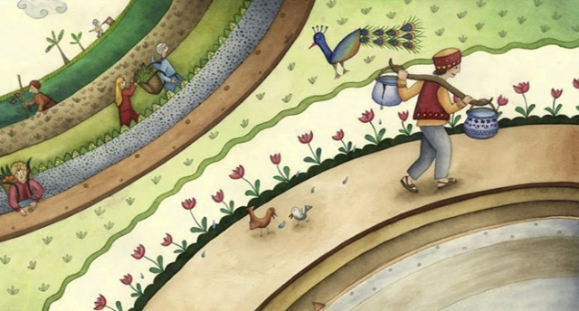

Притча про два весла.
Човняр перевозив мандрівника на інший берег.
Подорожній зауважив, що на веслах були написи. На одному веслі було написано: «Думай», а на другому: «Роби»
— Цікаві у тебе весла, — сказав мандрівник. – А навіщо ці надписи?
— Дивись, — посміхаючись, сказав човняр. І почав гребти лише одним веслом, з написом «Думай».
Човен почав крутитися на одному місці.
— Бувало, я думав про щось розмірковував, будував плани… Але нічого корисного це не приносило. Я просто кружляв на місці, як цей човен. Човняр перестав гребти одним веслом і почав гребти іншим, з написом «Роби». Човен почав кружляти, але вже в іншу сторону.
— Бувало, я кидався в іншу крайність. Робив щось бездумно, без планів, без креслень. Багато сил і часу витрачав. Але, в підсумку, теж крутився на місці.
— От і зробив напис на веслах, — продовжував човняр, — щоб пам’ятати, що на кожен помах лівого весла повинен бути помах правого весла і тільки тоді можна буде потрапити туди, куди хочеш.
Притча про впевненість у власних силах.
Один підприємець по вуха загруз в боргах і вже не бачив виходу з ситуації, яка склалася. Він заборгував кредиторам, а постачальники щодня вимагали оплати. Чоловік вийшов в парк, щоб відволіктися, але думки роєм крутилися в голові. Він опустив голову на руки, подумки перебираючи варіанти, що ж може врятувати справу від банкрутства. Раптом перед ним з’явився якийсь старий.
– Я бачу, що вас щось турбує, – сказав він. – Чи не поділитеся? Підприємець розповів йому про свої проблеми, брак грошей і відмови банку видати хоч якийсь кредит для розкрутки. Старий слухав, не перебиваючи, а потім сказав: – Думаю, я можу вам допомогти.
Він запитав у підприємця ім’я, виписав чек і сунув його в руку здивованого чоловіка. – Візьміть ці гроші. Зустрінемося тут рівно через рік, і ви зможете віддати мені їх назад.
Не встиг чоловік і слова сказати, як старий розчинився в натовпі. Підприємець глянув на чек. На ньому в полі для суми було акуратно виведено «$ 500 000», а нижче було прописано ім’я – «Джон Рокфеллер». Джон Рокфеллер, один з найбагатших людей світу!
«Я можу покінчити з усіма проблемами в одну мить!» – Подумав він. Але замість цього підприємець вирішив покласти чек в сейф. Одна тільки думка про його існування давала йому сили знайти спосіб зберегти свій бізнес.
З відновленим оптимізмом він уклав вигідні угоди й розширив умови оплати. Йому вдалося здійснити кілька великих продажів. Протягом декількох місяців він вибрався з боргів і знову став заробляти гроші. І через рік чоловік повернувся в парк з тим самим чеком.
У домовлений час з’явився старий. Чоловік уже готовий був віддати чек і розповісти про свої успіхи, як раптом підбігла медсестра і схопила старого. – Я так рада, що нарешті впіймала його! – Вигукнула вона. – Сподіваюся, він не турбував вас. Він часто тікає з дому і розповідає людям, що він Джон Рокфеллер.
Підприємець стояв приголомшений. Протягом всього року він крутився і робив бізнес, купуючи і продаючи, в повній впевненості, що в будь-який момент йому на порятунок можуть прийти півмільйона доларів.
Раптово він зрозумів, що не гроші, реальні або уявні, перевернули його життя. Його нова впевненість надала йому сил досягнути всього того, що він тепер має.
Притча про те, чому не варто соромитися своїх недоліків.
Давним-давно в маленькому містечку в Індії жив слуга зі своїм паном. Пан був милосердним, і завдяки цій рисі слуга зумів вивчитися грамоті і наукам, що було дивиною для людей його становища.
Однією з щоденних обов’язків слуги було приносити воду з глибокого колодязя, який знаходився дуже далеко. Але слуга був старанним, тому кожен день ходив до колодязя і назад.
Для того, щоб принести воду, слуга використовував спеціальне пристосування: два глечика, прив’язаних до двох кінців довгої жердини. Один з глечиків був дуже красивим, ідеальної форми, в той час як інший — з тріщиною. Тому, поки слуга повертався додому від колодязя, то у нього залишалося вже не два глечики з водою, а тільки півтора.
Слуга ніколи не скаржився на цю обставину, як і його господар. Всі були задоволені.
Але глечик ідеальної форми надзвичайно пишався собою і постійно хвалився глечику з тріщинкою: «Ти просто подивися на себе. Ти навіть не в змозі утримати всю воду, поки слуга повертається додому. Ти абсолютно даремний. На відміну від тебе, я можу утримати в собі вдвічі більше води! Навіть господар любить мене більше!»
Ці слова завдавали болю тріснутому глечику. Він сумував. Але мудрий слуга нічого не говорив і весь час носив воду за допомогою цих двох глечиків. При цьому він не скаржився своєму господареві і ніяк не реагував на зауваження цілого глечика.
Але гарний глечик ніяк не вгамовувався і продовжував жартувати і знущатися над тріснутим. Так тривало близько двох років: тріснутий глечик терпів знущання, глузування і вірно служив своєму господареві, як міг.
Однак в один день він все ж не витримав і розплакався, коли мудрий слуга ніс воду додому: «Мені соромно. Мені так соромно, що мене колись надбили, що я так і не виконав місію свого життя — не став справжнім помічником. Мені так шкода, що через мене ваш господар буде сердитися на вас — адже ви приносите менше води … »
Слуга у відповідь тільки посміхнувся і відповів: «Глечику, а чи не помітив ти чогось особливого? Невже ти ніколи не помічав, що коли я повертаюся додому з водою, то завжди перекладаю тебе на ліве плече?»
Глечик витер сльози і задумався. І він згадав! Дійсно, завжди і при будь-якій погоді слуга перекладав його на ліве плече, коли вони поверталися додому. «Так, саме так ви завжди робили, — сказав він юнакові. — Але чому?»
«Поглянь на дорогу зліва від нас», — відповів слуга, посміхаючись.
Глечик подивився. І, о диво! Одна сторона дороги, від колодязя до будинку, була вся — в чудових квітах!
Тріснутий глечик не міг повірити!
«Все це завдяки тобі, маленький глечику. Я спеціально ніс тебе на лівому плечі, щоб ти міг поливати насіння квітів, які я посадив кілька років тому. Я приношу ці прекрасні квіти своєму господареві і роблю його щасливим. Ти стільки доброго зробив для мене і для нас усіх, просто існуючи. Тому повинен пишатися собою, наш чудовий глечику», — відповів слуга.
Мораль цієї чудової історії така: просто живіть. Живіть з усіма своїми недоліками. У Творця був свій особливий план, коли він створював вас. Навіть якщо сьогодні ви не розумієте остаточного задуму — одного разу все відкриється!
Все в цьому житті — не просто так …
Притча про дві відповіді.
Одного дня до оази прийшов юнак. Попивши води, він спитав у старого, який відпочивав коло джерела:
– Скажи, що за люди тут живуть?
Старий гмикнув і собі запитав:
– А що за люди мешкають там, звідки ти йдеш?
– Ох, у нас повно жадібних до грошей, черствих лиходіїв, – мовив юнак.
– От таких самих ти зустрінеш і тут, – похитав головою старий.
Того самого дня біля джерела з’явився ще один мандрівник. Він також утамував спрагу, а тоді привітався з дідом і поцікавився:
– Скажи-но мені, батьку, що за люди мешкають у цій місцині?
Старий знову відповів питанням на питання:
– А які люди мешкають там, звідки ти крокуєш?
– О, ті люди пречудові! Чесні й чемні, гостинні та привітні...
– Таких самих ти побачиш і тут, – посміхнувся дід.
Потому хлопчик, що повсякчас сидів коло старого і чув обидві розмови, здивовано пролопотів:
– Чому на одне питання ти дав такі різні відповіді?
На що дід мудро прорік:
– Кожен із нас може бачити лиш те, що носить у своєму серці. Той, хто не виявив нічого гарного в жодному місці, де б він не був, не здатен відшукати добра ані тут, ані деінде.